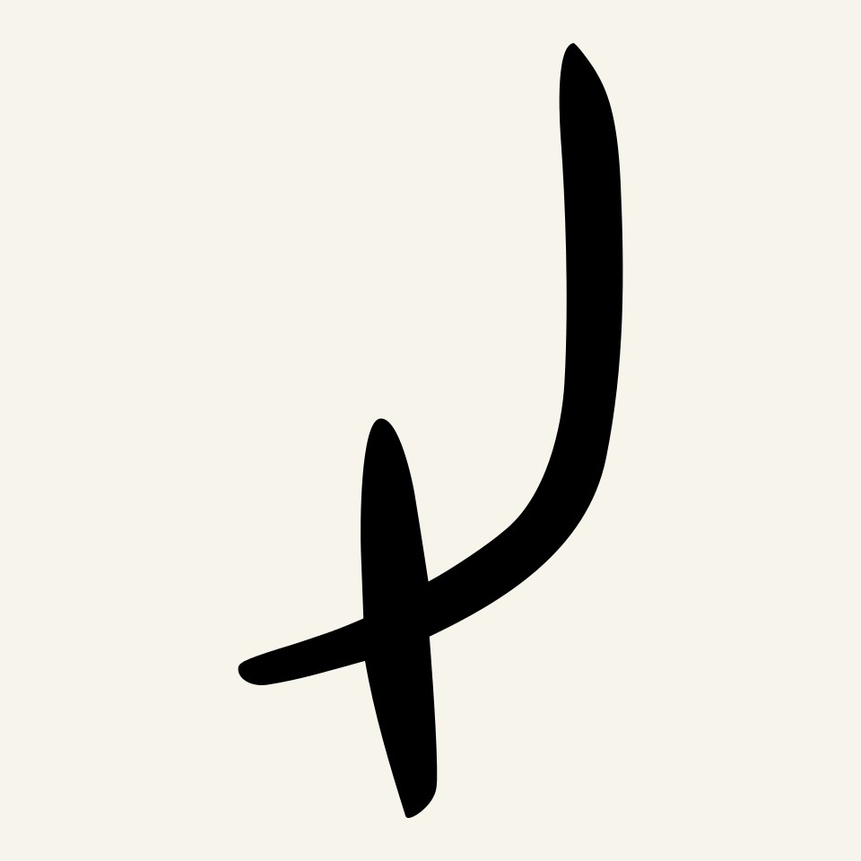
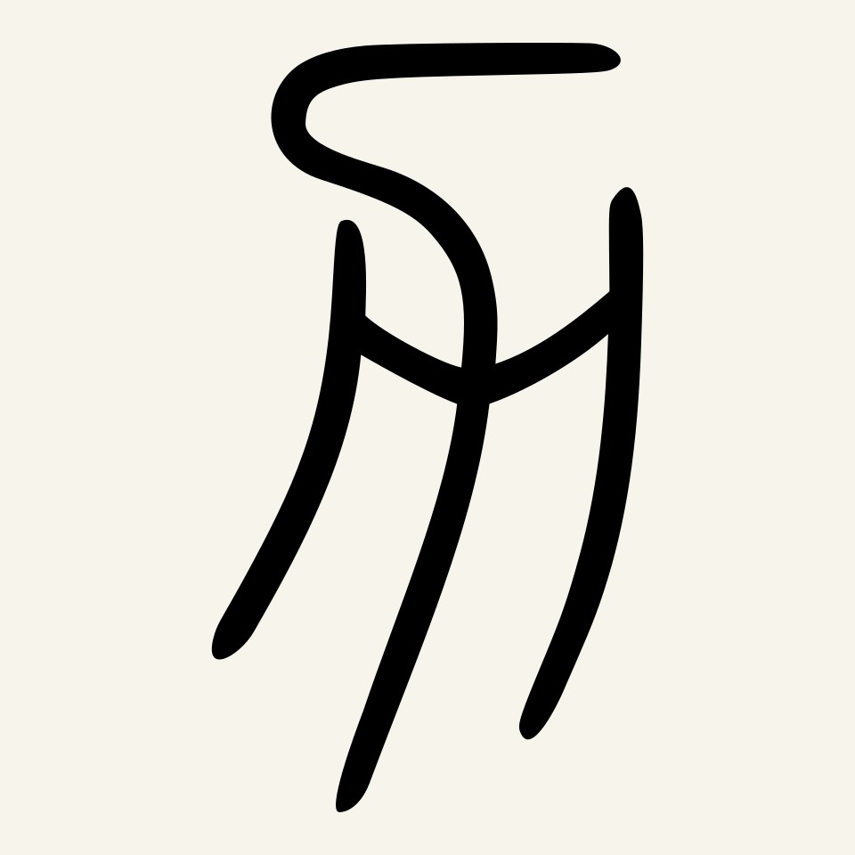
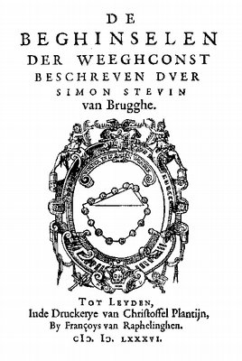
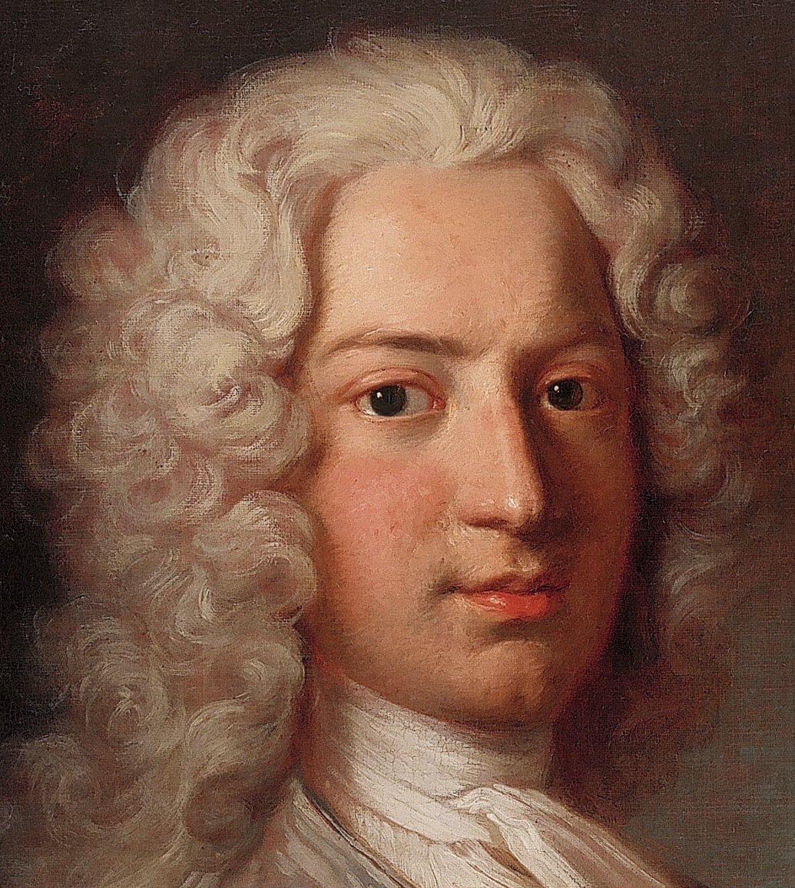
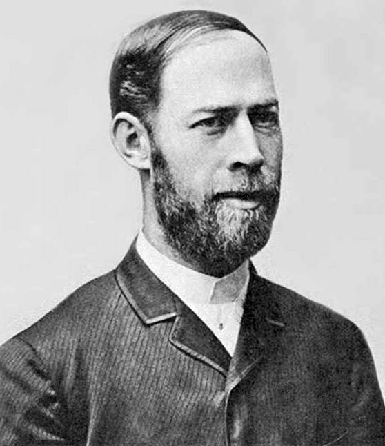

序「力」という字は、腕か、鋤か
「力」という字の成り立ちには、二つの読み方がある。後漢の字書『説文解字』は、これを人の筋（すじ）、つまり筋肉の形とした。ふくらんだ腕の線を写した字だという。これに対して白川静は、甲骨文の形を土を掘り起こす農具、鋤（すき）の象形と読んだ。鋤を表す字が、やがて「ちから」の意味に借りて使われるようになった、という説である。どちらが正しいかは、ここでは決めない。字源には今も諸説がある。
面白いのは、二つの説の向きである。筋肉説は、力を持ち主の側に置く。力とは腕に宿るもの、蓄えておけるもの、という見方だ。鋤説は、力を道具と土のあいだに置く。鋤が土に食い込み、土が割れる。その出来事の中にしか力はない。前者は「ある」力、後者は「働く」力と言ってもいい。
機械力学の授業が採るのは、はっきりと後者である。講義資料は力の合成を「複数の力を同じ作用をもつ一つの力にまとめる操作」と定義した。力の正体は問わず、作用が同じなら同じ力とみなす。力は、働きによってしか定義されていない。
鋤の説に立つと、ほかの字も読み替わる。たとえば「男」は田と力からなる。白川説では、これは田を耕す鋤、つまり田で働く者を表す字だという。「加」「助」「努」「勤」と、力を部品にもつ字は、どれも何かに向かって働きかける動作を含んでいる。力という字は、はじめから名詞であるより先に、矢印の形をした動詞だったのかもしれない。もちろんこれは見立てであって、字源学の結論ではない。だが、力を「ある量」ではなく「向きをもった働きかけ」として読む習慣は、漢字の側にも、どこかで用意されていたように見える。


一風は描けない。描けるのは、風に負けたものだけだ
扉に掲げた北斎の《駿州江尻》は、風を描いた絵として名高い。だが画面のどこにも風は描かれていない。描かれているのは、根元から大きくしなる木、旅人の懐からこぼれて空に散る紙、飛ばされる笠、背を丸めて耐える人々である。富士山は、この騒ぎとは無関係に、細い一本の線で静まり返っている。
見る者は、しなりの向きから風の向きを、紙の散り方から風の強さを読み取る。つまり風は、絵の中では向きと大きさをもつものとして、間接的にだけ存在している。これはそのまま、力学における力の立場である。ばねの伸び、ロープの張り、加速する台車。測れるのは、いつも力の「結果」のほうだ。
もちろん、北斎が力学を考えていたわけではない。だが、見えないものをその作用の向きと強さで表すという型は、浮世絵と力学に共通している。木と紙と笠は、いわば風の分力を一つずつ受け持って、見えない一つの風を画面に分解して見せている。
画面をよく見ると、紙は左下の旅人の懐からこぼれて右上へと一列に連なり、梢の枝葉も、飛ばされた笠も、同じ右上の方向へ流れている。北斎は風を描くかわりに、風の作用線を何本も引いたのだ。細い線だけで描かれた富士の、動かない三角形がその対比を際立たせる。動くものはすべて一つの向きにそろい、動かないものだけが向きをもたない。力が見えるようになるのは、何かがそれに負けて動いたときだけである。逆にいえば、負けないもの、つまり釣り合っているものの中では、力はどこまでも見えないままになる。前半の授業が扱う静力学は、まさにこの、何も動かない世界の見えない力を数える学問である。
二球の首飾りは、なぜ回り出さないのか
見えないものの足し算に、最初に確かな手がかりを与えた人物の一人が、フランドル出身の技術者シモン・ステヴィンである。1586年、彼はオランダ語で書いた静力学の書『計量術の原理（De Beghinselen der Weeghconst）』を出版した。その扉に刻まれた図が、のちに「クロートクランス（球の輪）」と呼ばれる図である。

図はこうだ。左右の傾きが違う三角形の台に、等間隔に球をつないだ首飾りを掛ける。長い斜面には多くの球が、短く急な斜面には少ない球が乗る。下には首飾りの残りが垂れ下がっている。この首飾りは、ひとりでに回り出すだろうか。
回り出すなら、回ったあとも配置はまったく同じなので、永遠に回り続けることになる。だがそんな永久運動は起こらない。だから首飾りは止まっている。下に垂れた部分は左右対称なので取り去っても釣合いは崩れない。すると、長い斜面の多くの球と、急な斜面の少ない球とが釣り合っていることになる。ここから、斜面に沿った重さの効き方は斜面の長さに反比例する、という斜面の法則が出てくる。これは、重力を斜面方向に分解する法則と同じ内容である。
図の下に、ステヴィンは「不思議は不思議にあらず（Wonder en is gheen wonder）」という言葉を添えた。驚くべきことに見えても、理由を詰めれば驚くにはあたらない、という宣言である。彼はこの図を大いに気に入り、自著の扉や手紙の封にも使ったと伝えられる。
この論証が鮮やかなのは、力をまったく「見ず」に、力の分け方を決めてしまう点にある。使ったのは、永久機関はありえないという確信と、左右対称という形の議論だけだ。見えないものの規則を、見えないまま、外堀から確定させている。
この結論を授業の言葉に直すと、斜面に置いた物体の重さを「斜面に沿う向き」と「斜面に垂直な向き」の二つに分けたとき、斜面に沿う分力は重さに傾斜角の正弦を掛けたものになる、ということである。教材の式で言えば、分解の向きを先に決め、未知の大きさを求める手続きにあたる。ステヴィンは三角関数も連立方程式も使わず、球の数を数えるだけでそこへたどり着いた。分解の向きを決めているのは斜面というかたちであり、大きさを決めているのは「永久には回らない」というふるまいである。かたちとふるまいから見えない力を割り出すという手つきは、四百年後の授業の例題で、ロープの向きと釣合いから張力を求めるやり方と少しも変わっていない。
三平行四辺形は証明できるか
授業では、二つの力を合成するには平行四辺形の対角線をとる、と習った。式で書けば R = F₁ + F₂、成分ごとに足すだけの操作である。あまりに当然に見えるので、これが「なぜ正しいか」を問う人は少ない。だが十八世紀の数学者たちは、この問いに真剣に取り組んだ。
ニュートンは1687年の『プリンキピア』で、運動の三法則のすぐあとに「系1」として力の平行四辺形を置いた。二つの力が別々に生む運動を組み合わせる、という運動の側からの説明である。同じ年、フランスのヴァリニョンも、運動の合成から同じ規則を導いている。
これに満足しなかったのが、ダニエル・ベルヌーイである。1726年、彼はペテルブルク科学アカデミーの紀要に「力学の原理の検討、ならびに力の合成と分解の幾何学的証明」を発表した。運動を持ち出さず、静力学の中だけで、自明と思われるいくつかの場合から純粋に論理的に平行四辺形を導こうとしたのである。

その後もダランベールやフォンスネクスらが、平行四辺形を「先験的に」証明しようと挑んだ。しかし後の評価は厳しい。マッハは『力学史』で、こうした論理的導出は、証明すべきことをどこかで前提に忍び込ませている、と指摘した。今日では、力の平行四辺形は証明される定理ではなく、経験に支えられた公理として扱われることが多い。
ここには一つの反転がある。授業の中でいちばん「計算」らしい操作、つまり成分ごとの足し算が、実は力学の中でいちばん「信じる」ことに近い場所に立っている。力学が R = ΣFi を使い続けているのは、自然がそう振る舞うことを何百年も確かめてきたからであって、論理だけで強制されているからではない。
F₁ + F₂ + … + Fn ≠ R」は、まさにこの点に関わる。足してよいのは矢印であって大きさではない。何を足してよいかを決めているのは、数学ではなく自然のほうである。四力を消そうとした物理学者
力が見えず、その合成則も経験からしか言えないなら、いっそ力という言葉をなくしてしまえないか。十九世紀の終わり、本気でそう考えた物理学者たちがいた。
キルヒホッフは1876年の力学講義で、力学の課題を「自然の中で起こる運動を、完全に、もっとも簡単に記述すること」と述べた（筆者訳）。運動の「原因」を説明することは、課題から外されている。力は、記述を短くするための便利な略記にすぎない、という立場である。
マッハも近い立場にいた。マッハにとって、力とは「質量×加速度」という観測できる量に与えた名前にすぎず、それ以上の何か、たとえば物体の内側にひそむ努力のようなものを想定する必要はなかった。こうして十九世紀の後半、力は、自然の中に実在する何かから、計算のための約束ごとへと格下げされかけていた。授業のスライドで、第二法則を「運動量の時間変化＝力」と書き直したのは、この意味でも示唆的である。左辺は観測できる運動の側にあり、右辺の力はそれに付けられた名前のようにも読めるからだ。
さらに先へ進んだのが、電磁波の実験で知られるハインリヒ・ヘルツである。彼が亡くなった1894年に刊行された『力学原理』は、空間・時間・質量だけを基本の概念として、力を基本概念から外した力学を組み立てようとした。物体どうしが押し合い引き合うように見えるのは、目に見えない「隠れた質量」が隠れた運動をしていて、それと結びついているからだ、と彼は考えた。

この構想は、同時代の多くの読者を困惑させた。マッハは、見えない力の代わりに見えない質量を置いても、見えないものが一つ別のものに入れ替わっただけだと批判した。結局ヘルツの力学は主流にはならず、力は力学の言葉として生き残った。
だが、この試みが失敗だったとは言い切れない。ヘルツが示したのは、力という言葉がなくても書けるかもしれないほど、力は「見えないもの」だということである。北斎が風を描かずに風を描いたように、ヘルツは力を書かずに力学を書こうとした。両者の方法は、見えないものを見えるものの配置だけで語る、という一点で重なっている。
五見えないものに、余裕を払う
では工学は、この見えない力とどう付き合っているのか。授業の最初の例題は、二本のロープで500 kgの物体を吊るとき、ロープにどれだけの強さが必要かを問うものだった。答えは各ロープに約4.91 kN。だが講義は、そこで終わらずに安全率という言葉を出してきた。限界の強さを、実際にかかる荷重で割った比である。
安全率は、計算が信用できないから掛けるのではない。計算そのものは正確でも、その計算に入れた力が本当にそれだけか、誰にもわからないから掛ける。ロープの傷、吊り上げるときの揺れ、思いがけない風。力は見えないので、見落とした力もまた見えない。安全率とは、見えないものに対して前もって払っておく余裕である。
もう一つ、計算は見えない約束の上に立っている。例題のロープの張力を求めるとき、ロープは長さの方向にしか力を伝えず、引くことはできても押すことはできない、と黙って仮定した。だからロープの力の向きは、ロープの向きそのものとして先に決まり、未知数は大きさだけになった。教材で分力を「大きさ×単位ベクトル」と書いたのは、この約束を式にしたものである。けれども現実のロープは、結び目で曲がり、わずかに伸び、荷が揺れれば張力も揺れる。力学の答えは、こうした見えない約束をいくつも呑み込んだうえでの答えであり、安全率はその約束が破れたときのための保険でもある。
ここで、ステヴィンからヘルツまでの道のりが一つにつながる。人はまず、見えない力に矢印という形を与えた。次に、その矢印の足し方を、論理と経験の両方から確かめようとした。そして最後に、確かめきれない残りに対しては、数字の余裕で備えることを覚えた。機械を設計するとは、この三つを同時に行うことにほかならない。
結矢印は、作用点を離れられない
力は見えない。だから人は力に矢印を与え、矢印として足し、矢印として分けてきた。ただし、矢印には一つだけ、紙の上の記号らしくない癖がある。どこに描くかで、意味が変わるのだ。
同じ大きさ、同じ向きの二つの力でも、本の同じ高さを押せば本は止まり、高さをずらせば本は回り出す。矢印は向きと長さだけでなく、どこに刺さっているかを覚えている。字源の鋤も同じで、鋤がどこに刺さるかで、土がどう割れるかは変わる。北斎の風も、同じ風なのに、木の根元ではなく梢に当たるからこそ、木を大きくしならせている。
次回の講義は、この「どこに」を数える。力に腕の長さを掛けた量、モーメントである。見えない力は、ずらされたとき、回す働きとして姿を現す。
力は見えない。
だが、どこを押したかは、ものが覚えている。
本棚このコラムの書架
参照した本 ── 本文が依拠した原典
- シモン・ステヴィン『計量術の原理（De Beghinselen der Weeghconst）』 1586年球の輪の論証と「不思議は不思議にあらず」の銘（二）。
- アイザック・ニュートン『自然哲学の数学的諸原理（プリンキピア）』 1687年運動の法則の系1としての力の平行四辺形（三）。
- ダニエル・ベルヌーイ「力学の原理の検討、ならびに力の合成と分解の幾何学的証明」 1726年、ペテルブルク科学アカデミー紀要平行四辺形を静力学だけから導こうとした試み（三）。
- グスタフ・キルヒホッフ『数理物理学講義 力学』 1876年力学の課題を「記述」とした一節（四）。
- ハインリヒ・ヘルツ『力学原理』 1894年力を基本概念から外し、隠れた質量で置き換える構想（四）。
※原典はいずれも通読していない。該当箇所の内容は、科学史の研究書・論文やオンライン資料（下の「事実確認に用いた資料」）で確認した。
参考図書 ── さらに読むために
- エルンスト・マッハ『マッハ力学史 ―古典力学の発展と批判』上・下（岩野秀明訳） ちくま学芸文庫、2006年ステヴィンの球の輪から平行四辺形の「証明」批判まで、このコラムの骨格の多くがここにある。
- マックス・ヤンマー『力の概念』（高橋毅・大槻義彦訳） 講談社、1979年古代から二十世紀まで、「力」という概念がたどった変遷を一冊で通観できる。ヘルツの章もある。
- 山本義隆『古典力学の形成 ―ニュートンからラグランジュへ』 日本評論社、1997年ニュートン以後の十八世紀に、力学がどのように数式の体系になったかを原典に沿ってたどる。
- 白川静『常用字解』 平凡社、2003年「力」を鋤の象形とする説をはじめ、身近な漢字の成り立ちを一字ずつ読める。
図版の出典
- 北斎《駿州江尻》：File:冨嶽三十六景 駿州江尻 … MET DP140977.jpg（CC0、メトロポリタン美術館。縮小のみ）
- 「力」の字形：File:力-oracle.svg、File:力-seal.svg（Public domain。背景色をつけてJPEGに変換）
- ステヴィン『計量術の原理』扉：File:Simon Stevin - Voorblad van De Beghinselen der Weeghconst, 1586.png（Public domain。JPEGに変換）
- ダニエル・ベルヌーイの肖像：File:Porträt des Daniel Bernoulli (cropped).jpg（CC BY-SA 4.0、補正：Bammesk。縮小のみ）
- ヘルツの肖像：File:Heinrich Rudolf Hertz.jpg（Public domain）
,_from_the_series_Thirty-six_Views_of_Mount_Fuji_(Fugaku_sanj%C5%ABrokkei)_MET_DP140977.jpg){kind=link}


.jpg){kind=link}

事実確認に用いた資料
- MathPages「Wonder En Is Gheen Wonder」：球の輪の論証と銘、扉・封印への使用
- Wikipedia「De Beghinselen Der Weeghconst」：刊行年（1586年）と内容
- Encyclopedia.com「Bernoulli, Daniel」：1726年の論文の題名・掲載誌と、その論証が循環的と評価されていること
- Wikipedia「Parallelogram of force」：ニュートン・ヴァリニョン以後の証明の試みと、公理としての扱い
- Encyclopedia.com「Hertz, Heinrich Rudolf」・“Mach and Hertz's mechanics”：『力学原理』の構想（空間・時間・質量、隠れた質量）とマッハの批判
- ウィクショナリー「力」・「常用漢字論―白川漢字学説の検証」：『説文解字』の筋説と白川静の鋤（耒）説
- 筑摩書房『マッハ力学史 上』、版元ドットコム『力の概念』：参考図書の書誌